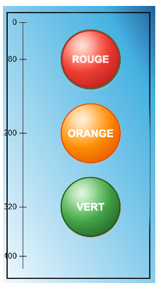
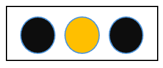
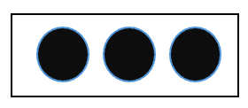

🟡 Expérimentation
Piloter les feux tricolores depuis une tablette tactile
Soit une tablette tactile de 200 x 400 pixels sur laquelle on présente des zones à cliquer pour allumer les feux.

Tablette 200x400
Comportement attendu
Un appui sur l'écran va ramener une coordonnée (x,y) à transposer en action:
| Le clic (x,y) a lieu | Action | Sortie |
|---|---|---|
| dans le cercle Rouge |

|
[0,0,1] |
| dans le cercle Orange |
 |
[0,1,0] |
| dans le cercle Vert |

|
[1,0,0] |
| Ailleurs |
 |
[0,0,0] |
Une nouvelle problématique : 80 000 cas possibles
Au lieu des 4 cas des deux interrupteurs du chapitre 1, on a ici 200x400 pixels =
80 000 cas possibles de coordonnées x1,x2.
Il n'est plus possible de traiter cas par cas : il faut que le réseau apprenne seul
sur des échantillons suffisants.